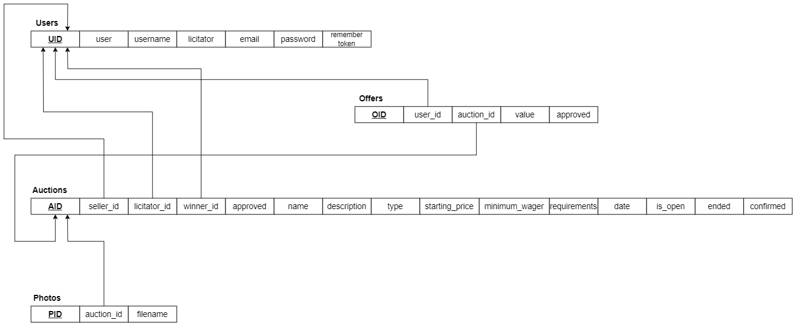

Aukce: prodej a nákup zboží a majetku prostřednictvím dražby
- Autoři
- David Hudák
xhudak03@stud.fit.vutbr.cz -
Nedesignová část view, autorizace, část kontroleru, routing, instalace na server
- Štefan Mračna
xmracn00@stud.fit.vutbr.cz -
Model (databáze), část kontroleru (zpracování formulářů), dokumentace
- Albert Groma
xgroma00@stud.fit.vutbr.cz -
Designová část view, vyhledávač aukcí
- URL aplikace
- http://www.stud.fit.vutbr.cz/~xhudak03/IIS
Uživatelé systému pro testování
| Login | Heslo | Role |
|---|
| admin | admin1234 | Administrátor |
| licitator | licitator1234 | Licitátor |
| user | user | Registrovaný uživatel |
(Diagram případů užití není nutné vkládat, pokud IS implementuje role a případy užití definované zadáním -- mělo by být dodrženo.)
Implementace
Projekt byl implemetován ve frameworku Laravel
Správa uživatele od administrátora se děje na stránce /admin/users a implementuje se přes metodu
edit v třídě UserChangesController, který je implementován v souboru UserChangesController.php.
Typ akce, který se provede, se zjistí pomocí atributu action objektu request. Administrátor může
uživatele smazat (pokud se nejedná o admina samotného), degradovat na běžného uživatele či uživatelovi přidělit roli licitátora.
Schvalování navrhovaných aukcí se děje na stránce licitátora (/licitpage, view implementován
v licitpage.blade.php). Implementace obsluhy schvalování je v souboru LicitpageController.php,
v metodě action, kdy je typ akce dodán jako parametr action objektu request. Mezi typy akce
u schvalování navrhovaných aukcí patří Approve (schválí aukci) a Refuse (Zamítne aukci).
Potvrzování registrace účastníků aukcí se děje pomocí potvrzování nabídek. Děje se na stránce
uživatelových aukcí (pokud se jedná o licitátora či admina), neboli /users/{ID uživatele}/auctions.
Implementace je v LicitpageController.php. v metodě action, kdy akcí ($request->action) je buď
Approve offer (registruje uživatele do aukce) nebo Refuse offer (Zamítá registraci uživatele do aukce
a smaže nabídku).
Plánování aukce se děje na straně uživatele. Aukce se spouští schválením aukce licitátorem.
Aukce se ukončují automaticky po překročení data konce aukce (atribut date v tabulce auctions).
Vyhodnocování a zveřejnění aukcí se děje v licitátorské stránce (/licitpage) a je implementován
v souboru LicitpageController.php v metodě action. Do atributu $request->action je vložena hodnota
"Confirm", která potvrdí aukci a umožní zobrazení jejich výsledků ve view uživatele. Licitátor
může v jakékoli fázi mezi schválením a zveřejněním aukce tuto aukci smazat pomocí tlačítka "Delete",
která aktivuje metodu action v LicitpageController.php s hodnotou $request->action nastavenou na
"Delete", která smaže aukci z databáze.
Uživatel vytváří aukci na stránce Request Auction (/auction/request). Založení aukce
se implementuje v souboru AuctionRequestController.php v metodě request, která verifikuje, zda
je aukce vložená správně (povinná políčka jsou vyplněná) a vloží ji do databáze.
Příhozy do aukce se dějí na stránce aukce (/auction/{ID aukce}) a implementuje se pomocí
metody requestBid v AuctionRequestController.php.
Sledování stavu aukce a stav registrace je implementováno ve view (auction.blade.php, případně user.blade.php a myauctions.blade.php).
Vyhledávač ze stránky welcome.blade.php je implementován v controlleru AuctionController.php (jedná se o featuru navíc oproti zadání).
Všechny views jsou implementovány ve složce resources ve views. Všechny controllery by měly být v cestě app/http/controllers. Modely jsou ve složce app/models
a databázové věci (tabulky, seedery, factory) jsou ve složce database. Směrování aplikace se
primárně odehrává ve složce routes a souboru web.php. Kaskádové styly pro web jsou primárně v souboru /public/css/mystyle.css.
Databáze

Instalace
Projektu existují dvě verze -- vývojářská (odevzdávaná), která je aktivována z příkazové řádky
pomocí příkazů Artisanu a druhá (na Evě), kde jsou posunuté odkazy (bez public atp.)
a projekt je spouštěn prostřednictvím serveru Apache na Evě. Konfigurace na server je
složitější a znamená spoustu drobných změn, které nejsou náročné, ale jsou zdržující a je kvůli
nim nutné Googlit atp. Odevzdávaná verze je vývojářská z toho důvodu, že pokud to bude chtít
hodnotící projekt lokálně rozjet, tak je to mnohem snazší.
K výrazu vývojářská se dá ještě dodat, že spouštění s pomocí Artisanu je uvedeno v oficiální dokumentaci i
ve většině tutoriálů, které se práci s tímto frameworkem věnují (například).
Všichni členové týmu tak vyvíjeli a až do nasazení na server pracovali se spouštěním s pomocí Artisanu.
Postup instalace
- Stažený balík IIS.zip je nutno rozbalit do složky. Vznikne složka IIS, ve které je vše potřebné (krom této dokumentace, ta je o patro výš).
- Projekt byl vyvíjen na PHP verze 7.4, na operačním systému Ubuntu, MySQL z aktuálních repozitářů a s pomocí využití nástroje composer k instalaci závislostí.
V Ubuntu bylo obvykle potřeba nainstalovat php-xml (z důvodu composeru). Další balíky se obvykle u nikoho neprojevovaly (svou absencí), ale jejich nutnost je možná.
- Napr: sudo apt-get install mysql-server mysql-client php composer php-xml php-mysql
- Ve složce IIS, ve které se rozbalí projekt, je nutné zavolat composer install -- instaluje Laravel balíky a závislosti. Ten by měl (pokud je nainstalováno php-xml atp.) nainstalovat složku vendor (atp.), ve které
jsou nutné závislosti nutné ke spuštění projektu. Tato instalace by měla být dostačující pro jakoukoliv další práci a spouštění.
-
Pro nastavení lokálních věcí je třeba modifikovat soubor .env nacházející se v kořenovém adresáři IIS. V něm je nutné doplnit jméno lokální databáze, jméno uživatele a heslo uživatele.
Pokud není doplněno, defaultně se jedná o roota bez hesla s databází "iis" (naše přístupové údaje k MySQL databázi na Evě nejsou z praktických důvodů uvedeny).
Vzhledem k nové verzi MySQL je nutné další příkazy volat s příkazem sudo (ideální tak je změnit údaje na nějaké
nerootovské; uživatel root už na mysql přístup bez hesla nemá).
-
Pro inicializaci databáze je vhodné použít příkaz php artisan migrate:fresh (zahodí staré tabulky a nahraje nové). Následně lze použít příkaz php artisan db:seed, který naseeduje databázi
některými základními daty (nějaké aktuální aukce s obrázky, náhodní uživatelé, uživatelé z výše uvedené tabulky včetně admina).
Seeder nevytváří nabídky a ani neschvaluje aukce. Ty si už musí uživatel navolit sám.
-
Pokud vše bylo nakonfigurováno správně, lze zavolat (sudo v případě databázového uživatele root) php artisan serve,
který bez dalších prerekvizit atp. vysílá na lokální adrese 127.0.0.1:8000 (či jiné, artisan sám vypíše) a lze tak přistupovat ke kompletnímu webu našeho týmu.
Postup instalace na server (doplňující kroky) -- primárně jako popis postupu nahození na Evu.
-
Instalace Laravel projektu bez artisanu je o něco komplikovanější, ale ne příliš náročná. Jediný větší problém tvoří odkazy, které je mnohdy nutné přepisovat
či jinak doplňovat.
-
Ze složky public je potřeba vytáhnout index.php a .htaccess o adresář výš (do kořenového). V index.php je nutné změnit cesty k vendor atp. formou "/../" -> "/" (není nutné vystupovat ze složky public).
-
V souboru .env je nutné změnit APP_URL na žádané URL.
-
Občas se vyskytne problém (na Evě ne), že aplikaci je nutné volat skrze /index.php (následně pak /index.php/login atp.). Toto zabíjí většinu routování a problém se nepodařilo vyřešit. Tento problém se však objeví jen na některých serverech
(na Evě ne) -- jedná se o primární důvod, proč je odevzdávána vývojářská verze -- tedy z důvodu vyhnutí se těmto problémům.
-
Dále někde chybí korektní cesty v bladech ve složce resources. Někde je nutné dodat do cesty (například k myapp.css) doplněním cesty public, někde je potřeba dodat do každého < a href=""
odkazu na začátek {{ url('\') }}. Tento problém je poněkud otravný a v vývojářské verzi není z nadbytečnosti řešen.
- Někdy vzniká problém u souboru .htaccess, v něm se pak dá řešit problém odstraněním první if podmínky s výsledkem options.
Známé problémy
Celý program je v angličtině -- neměl by to být problém, ale je vhodné to někde zmínit.
Program byl dělán v souladu s naším pochopením zadání a měl by vykonávat vše, co v něm bylo uvedeno.
V případě problémů s lokálním rozjetím projektu či náhodnému výpadku na serveru se doporučuje obrátit na vedoucího člena týmu -- xhudak03